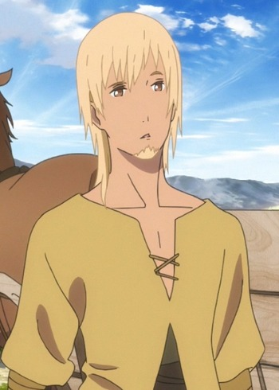

|  |
Barlow |
- Maquia - When The Promised Flower Blooms
|
Barlow is half-Iorphian, who helps Maquia. He speaks with witty and sarcastic remarks. He comes off as a carefree individual who is disinterested in the well being of others. |
 |
Klein |
- Sword Art Online
- Sword Art Online: Sword Art Offline
- Sword Art Online: Extra Edition
- Sword Art Online: Extra Edition - Sword Art Offline
- Sword Art Online II
- Sword Art Online Movie: Ordinal Scale
- Sword Art Online: Alicization
- Sword Art Online: Alicization - War of Underworld
|
Klein or Ryoutarou Tsuboi is a player that Kirito meets at the start of game. He is a Katan user and the leader of the small guild Fuurinkazan. Klein is a very loyal person and nevers holds a grudges aganist other players. He always lends a helping hand. |
 |
Shiro Fujimoto |
- Blue Exorcist: Kyoto Saga
|
Shiro Fujimoto is a priest, an Exorcist, the Paladin of the True Cross Order, and the adoptive father of the Okumura twins. He is quite mysterious but has a protective personality and kind heart. He raised Rin and Yukio with all of his heart as if they werer his own children. Despite being a priest, he is immature and jokes around a bit. He is a womanizer and likes womens with hig breasts. He can have a cold-hearted personality.Shiro changed his tactics to understand and reason with demons before using force. |


.jpg)